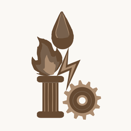

The problem
Building inspection still runs on paper punch lists and photos in a camera roll. Consumer LiDAR scanning apps produce a pretty mesh of one visit, but nothing that survives the next one: the second scan doesn’t line up with the first, an elevator ride breaks tracking, glass and polished floors leave holes, and the people walking through end up baked into the walls.
Cairn and Plenum are the two ends of a system built to fix that. The goal is a single record of a site that gets better with every visit, tagged by trade, that an inspector can actually work in.
One walk, one record, three tools

Built for a thumb, gloves, and a bright doorway. One continuous ARKit session, no separate passes.
- LiDAR + RoomPlan capture with RGB, depth, panoramas and motion
- 2.5-second nameplate hold grounds each visit in shared coordinates
- Offline-first queue; capture never needs site Wi-Fi
- Elevator-aware tracking banners and haptics
- Person and face data handled before a scan leaves the device
Built for a mouse, a keyboard and a long tagging session. Five ways to see the same space.
- Architecture, raw LiDAR, fused point cloud, gap-filled mesh, photo-textured composite
- Metal splat viewer alongside SceneKit views
- MEP asset tagging with one colour per trade
- Change history: click a sign or board to see it from every visit
- Admin, diagnostics and cluster load-manager tabs
The hard parts
Most of the engineering time went into making the record hold up under real conditions rather than on a demo floor.
- Elevators. ARKit’s frames stall for the whole ride, and barometric altitude was fighting the shaft offset. The fix splits the session at the ride, promotes a trusted origin, and applies a yaw correction so the floor-6-to-1 ride lands where it should instead of 38 m sideways.
- Repeat visits. A second visit is registered per fragment using a nameplate-seeded pose, ICP, and a two-sided “both cameras looked here” agreement test before wall planes are merged. Untrusted fragments are held, not deleted, and re-solved when new evidence arrives.
- Reflective surfaces. Glass and polished floors leave LiDAR holes. TSDF fusion plus a monocular-depth gap fill close them without inventing geometry the cameras never saw.
- People. A projection rule across visits removes anyone who was only there once, so the composite shows the building, not the crew.
- Doubled surfaces. The splat’s copy of a wall used to float in front of the photo-textured mesh. A per-surface layer rule keeps one, unless LiDAR saw an object there.
- Load time. Streaming the composite per floor, bottom-up, took a 10-minute open down to 27 seconds.
- Compute. A cluster load manager dispatches fusion, bake and training jobs across a Mac, an RTX 3060 workstation and a rack server over Tailscale.
One language, two devices
Both apps share one design system: warm paper and stone neutrals, ink text, brass as the single primary accent, and one hue per discipline so a tag reads the same on a phone in a mechanical room and on a Mac at a desk. Every token has a dark twin in the same family, and both apps offer System, Light and Dark. This site uses the same palette, which is why it looks the way it does.
How it was built
I founded Ledgeline Labs to build this. I own the product, the design system and the architecture, and I write and review the code with Claude Code as my primary engineering tool. The rule that mattered most: a log line or a passing test count is not a result. Every registration fix, bake and splat gets rendered and looked at, including a negative control, before it ships to the box the inspectors use.
Status: in daily use on two buildings, a five-storey academic hall and a chapter house, with a campus-wide capture campaign planned for November 2026. The repositories are private while the product is pre-release.